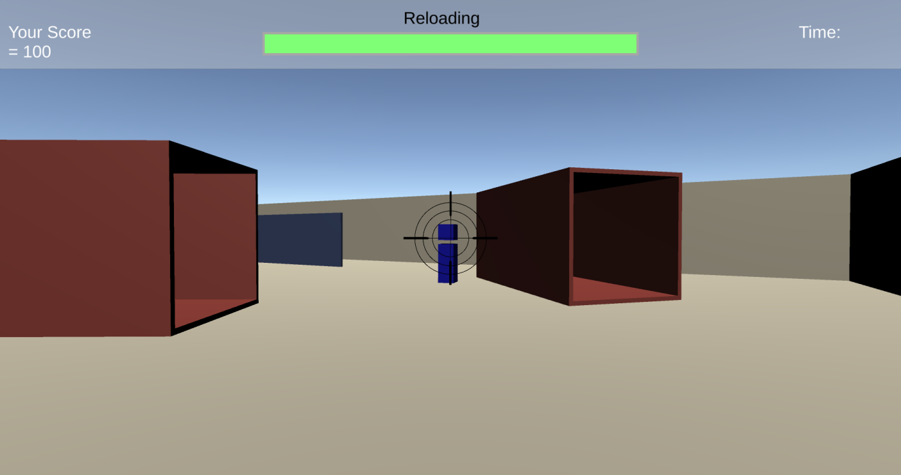

Introduction
This project was created for the GPR5100.1 module at SAE Institute Geneva. The goal was to build a small multiplayer game to learn networking concepts. The game was developed with Unity 2019.3.0f3 using Photon PUN 2.16 technology.
Game Mechanics
Players spawn in a map with the objective to shoot their opponents. Each kill grants 100 points. The first player to reach 1,000 points wins the game. Players shoot balls that travel straight forward - one hit kills the target.
Controls
- Movement: W, A, S, D keys
- Camera: Mouse movement
- Shooting: Left mouse button
Lobby System
The game features a complete lobby system: players log in, join a random room (or create one if none exists), and can start the game when ready. The room closes and becomes invisible once the game starts.
Network Architecture
Photon View
The Photon View component is required on every networked GameObject. It enables sending RPCs and integrates with other components like Transform View Classic, Rigidbody View, and OnPhotonSerializeView. It also provides access to the Photon Actor Number to identify each player.
Transform View Classic
Photon PUN's Transform View Classic interpolates position and rotation of other clients' GameObjects, ensuring smooth movement synchronization across the network.
Rigidbody View
The Rigidbody View sends player velocity to other clients, maintaining physics synchronization across the network.
OnPhotonSerializeView
This function synchronizes custom data - in this project, it's used to sync player materials through the MaterialObservable script.
Remote Procedure Calls (RPCs)
RPCs update game state information and handle bullet instantiation across clients:
PlayerController.cs
SpawnBall(Vector3 position, Vector3 velocity, int killerActorNumber)
Instantiates bullets at the same position for all players.
GameManager.cs
GivePointsToKiller(int killerActorNumber, int killedActorNumber)
Informs all clients about kills and score updates.
EndGame(int winnerActorNumberInRPC)
Broadcasts the winner to all clients and triggers end game state.
Project Structure
The project is organized with clear separation: Resources contain prefabs (Ball, Player), Scenes hold GameLauncher and GameScene, and Scripts are divided into GameScene logic (Bullet, GameManager, PlayerCamera, PlayerController) and Lobby UI (MainPanel, TopPanel).
Lessons Learned
- Practical experience with Photon PUN networking framework
- Understanding RPCs for game state synchronization
- Implementing lobby systems with room creation/joining
- Handling player interpolation and physics sync